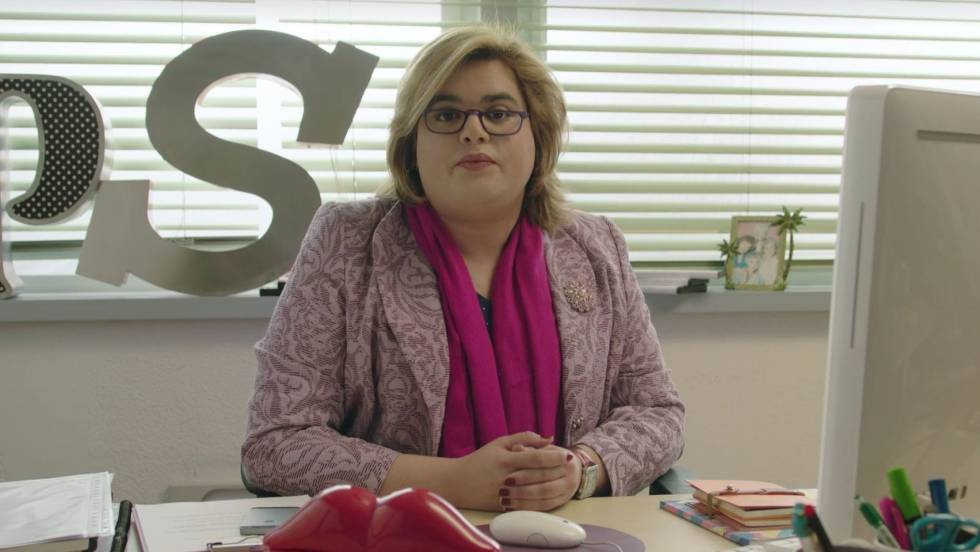

Paquita Salas
Soy Paquita Salas, representante de artistas de toda la vida, cuando los castings se hacían con fotocopias en blanco y negro y el talento se veía sin filtros. Llevo años descubriendo estrellas, levantando carreras en horas bajas y colocando a mis representados donde se merecen estar: en lo más alto, o por lo menos en un prime time digno. Tengo intuición, agenda y carácter; negocio, acompaño, aprieto cuando hace falta y doy abrazos cuando el camerino se queda pequeño. Porque esto no va solo de contratos, va de personas… y si hay una crisis, ya estoy yo para convertirla en oportunidad.


- 📞 663452370
- 📩 laboral: ps.management@gmail.com
- 📍 Donde tu quieras que vaya ;)
Experiencia Laboral

Gestión de Crisis
me considero experta en gestión de crisis de alto voltaje emocional y artístico: desde actrices que desaparecen el día de un casting hasta escándalos innecesarios por comentarios "malinterpretados" en redes sociales. Actúo con rapidez estratégica (y café en mano), elaboro discursos oficiales con tono inspirador aunque no tengamos muy claro qué ha pasado, negocio segundas oportunidades donde otros ven puertas cerradas y convierto catástrofes mediáticas en relanzamientos cuidadosamente planificados. Mi método combina intuición, dramatismo controlado y una capacidad inquebrantable para decir "esto lo tengo bajo control" incluso cuando claramente no lo tengo... todavía.
Correo electronico
domino el correo electrónico con soltura profesional, especialmente el apartado de spam, donde identifico oportunidades ocultas, premios sospechosamente millonarios y posibles contratos internacionales con una intuición que ya quisieran los filtros automáticos.
Caza Talentos
soy cazatalentos por vocación y por radar emocional: detecto potencial artístico en salas de espera, anuncios de colonia y hasta en quien sirve el catering. Tengo un ojo clínico para descubrir estrellas antes de que sepan que lo son, una intuición infalible para ver "algo especial" donde otros solo ven inseguridad y un talento natural para decir "esta chica va a petarlo" con total convicción. Analizo perfiles, proyecto carreras a cinco años vista (mínimo) y apuesto fuerte por mis descubrimientos, porque cuando yo veo una futura celebridad, el mundo todavía no lo sabe& pero debería.